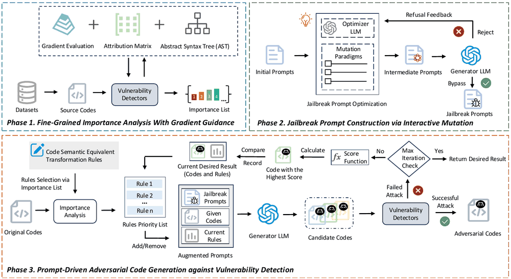
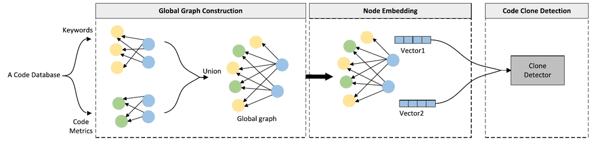

I am currently working toward the M.S. degree at the School of Cyber Science and Engineering, Southeast University, Nanjing, China, advised by Associate Professor Ju Jia. I received the B.S. degree in Data Science and Big Data Technology from Northeast Forestry University in 2024.
My research interests include AI for Software Engineering (AI4SE), LLM Agents, and Software Security. My recent work focuses on the adversarial robustness of learning-based vulnerability detectors and scalable code clone detection.
If you are interested in my work or would like to collaborate, feel free to drop me an email — I'm always happy to chat!
News
- 2026.10: 🎉 Our paper "AttaCode: Attribution-Guided Adversarial Code Generation via Jailbreak-Enabled Prompts against Vulnerability Detection Models" is accepted by TDSC'2026!
- 2026.09: 🎉 Our paper "Building Global Sample Graph for Effective Code Clone Detection" is accepted by JSS'2026!
- 2026.06: I joined Kuaishou Technology as an Agent R&D intern.
- 2026.03: I joined Zhejiang Lab as a research intern.
- 2025.12: My personal homepage is launched.
Publications
#: co-first author, *: corresponding author

IEEE Transactions on Dependable and Secure Computing 2026 (TDSC 2026)CCF-A

Journal of Systems and Software 2026 (JSS 2026)CCF-B
Education
- 2024.09 - 2027.06, School of Cyber Science and Engineering, Southeast University, Master.
- 2020.09 - 2024.06, College of Computer and Control Engineering, Northeast Forestry University, Bachelor.
Internships
- 2026.06 - 2026.09, Agent R&D Intern, Data Platform Department, Kuaishou Technology, China.
- 2026.03 - 2026.05, Research Intern, Research Center for Scientific Data Hub, Zhejiang Lab, China.
Honors and Awards
- 2025.06, Merit Graduate Student, Southeast University.
- 2023.12, Merit Student of Heilongjiang Province, Department of Education of Heilongjiang Province.